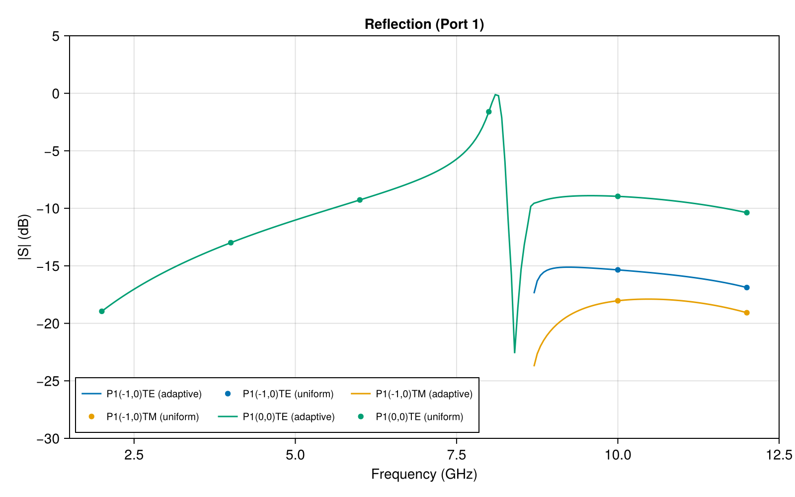
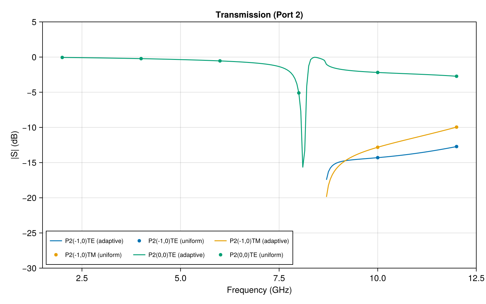

Floquet Ports for a Dielectric Grating
The files for this example can be found in the examples/dielectric_grating/ directory of the Palace source code.
This example demonstrates the use of Floquet port boundary conditions for computing diffraction efficiencies (S-parameters) of a 3D periodic dielectric grating. A TE-polarized plane wave is incident at 30° oblique incidence on a unit cell containing a dielectric bar, and the reflected and transmitted power in each diffraction order is computed over a frequency sweep.
The computational domain is a single unit cell of a doubly-periodic structure with periods $a = 4\text{ cm}$ in x and $b = 1\text{ cm}$ in y. The total domain height is $2L = 8\text{ cm}$ in z. A dielectric bar ($\varepsilon_r = 7$) of dimensions $2 \times 0.5 \times 0.5\text{ cm}$ is centered at the origin, surrounded by vacuum ($\varepsilon_r = 1$). Floquet port boundaries are placed at $z = \pm 4\text{ cm}$ and periodic boundary conditions with a Bloch phase shift are applied on the x and y faces. The Floquet wave vector $\bm{k}_F = (0, 1.0479, 0)\text{ cm}^{-1}$ at the reference frequency of $10\text{ GHz}$ corresponds to 30° oblique incidence, and scales linearly with frequency to maintain a constant incidence angle across the sweep.
The domain is discretized with a structured hexahedral mesh generated by mesh/mesh.jl using Gmsh. A second-order finite element approximation ($p = 2$) is used for the solution. Two configuration files are provided:
dielectric_grating_uniform.json: Uniform sweep from 2 to 12 GHz with $\Delta f = 2.0\text{ GHz}$ (6 frequency points).dielectric_grating_adaptive.json: Adaptive fast frequency sweep from 2 to 12 GHz with initial step $\Delta f = 0.05\text{ GHz}$ and tolerance $10^{-3}$.
The S-parameter magnitudes from the uniform (markers) and adaptive (lines) sweeps are shown below:


The adaptive sweep captures the sharp spectral features with high fidelity while using only a modest number of frequency samples, and agrees well with the uniform sweep results.
Below the Rayleigh anomaly at 8.66 GHz, only the specular (0,0)TE mode carries power — the grating behaves as a partially reflecting dielectric slab. Above 8.66 GHz, the first-order (±1,0) diffraction modes become propagating and appear as additional reflection and transmission channels. Near the Rayleigh anomaly, a sharp Fano resonance appears around 8.3 GHz: the incident wave couples to a leaky guided mode of the dielectric slab, producing a characteristic asymmetric lineshape with a sharp reflection peak and transmission dip.